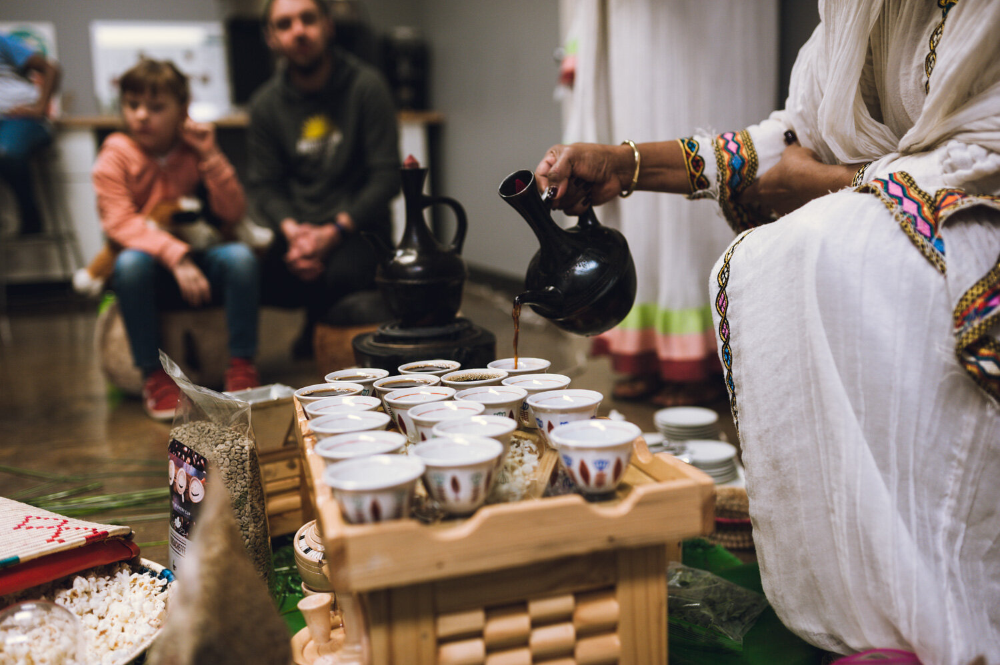

Plongez au cœur du berceau de l'Afrique et de l'humanité. L'Éthiopie, un pays aux paysages époustouflants, une histoire millénaire et une culture vibrante vous fait découvrir son pays.
Commencer l'explorationL'Éthiopie, située dans la Corne de l'Afrique, est l'un des plus anciens pays du monde et le seul pays africain à n'avoir jamais été colonisé. Berceau de l'humanité avec la découverte de Lucy, elle possède une histoire riche et fascinante.
Avec ses paysages diversifiés allant des sommets enneigés du Ras Dashan aux déserts brûlants du Danakil, l'Éthiopie offre une variété géographique exceptionnelle.
Connue pour ses traditions, sa religion, ses plats et son alphabet unique, elle est aussi célèbre pour son café, considéré comme l'un des meilleurs au monde.
Quoi de mieux que du bon jazz Éthiopien pour plonger à la découverte de l'Éthiopie ? Découvrez les rythmes traditionnels et l'Ethio-jazz unique
Yèkèrmo Sèw
Ethio-Jazz • 1974
Mulatu Astatke • Ethio-Jazz
Découvrez les trésors visuels de l'Éthiopie à travers ce diaporama
Découvrez les différentes facettes de ce pays fascinant
Découvrez l'histoire millénaire de l'Éthiopie, ses empires anciens et ses rois légendaires
Explorer
Plongez dans la riche culture éthiopienne, ses danses, sa musique et ses traditions
ExplorerExplorez les paysages spectaculaires, des hauts plateaux aux déserts du Danakil
Explorer